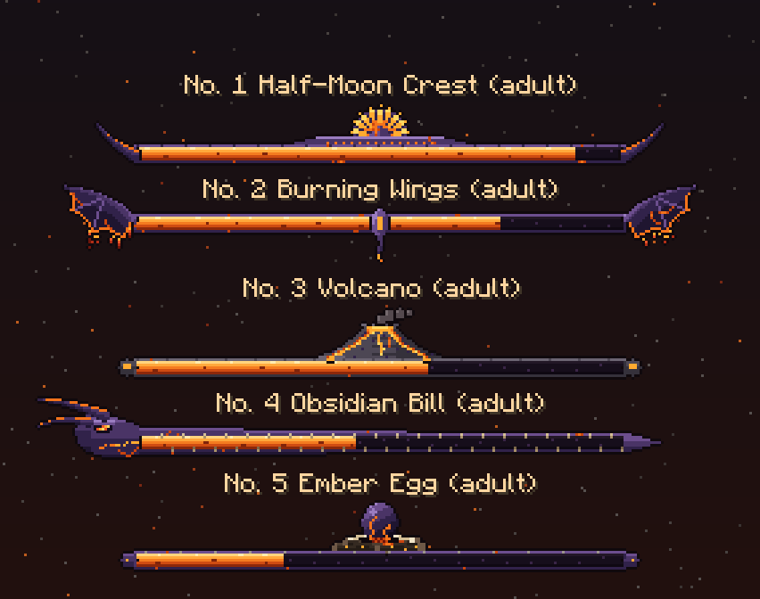
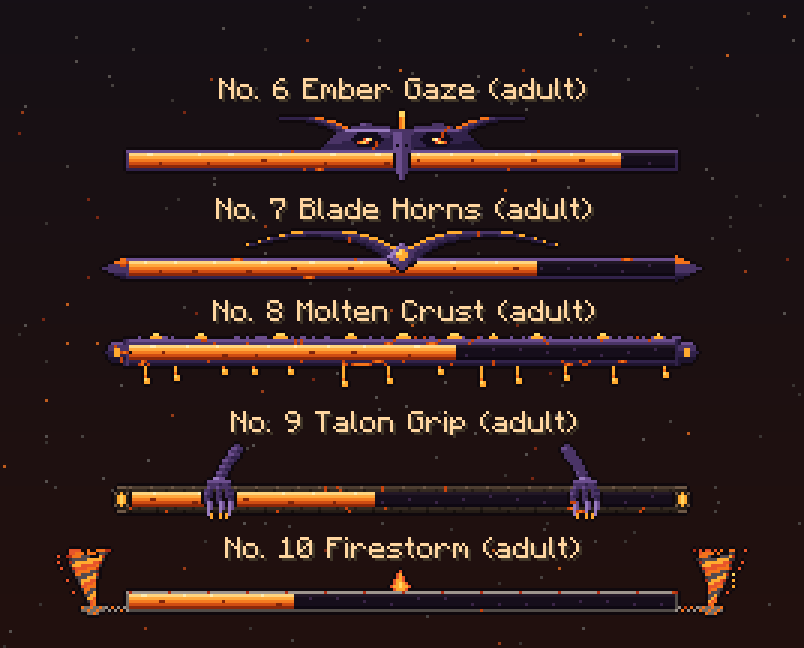
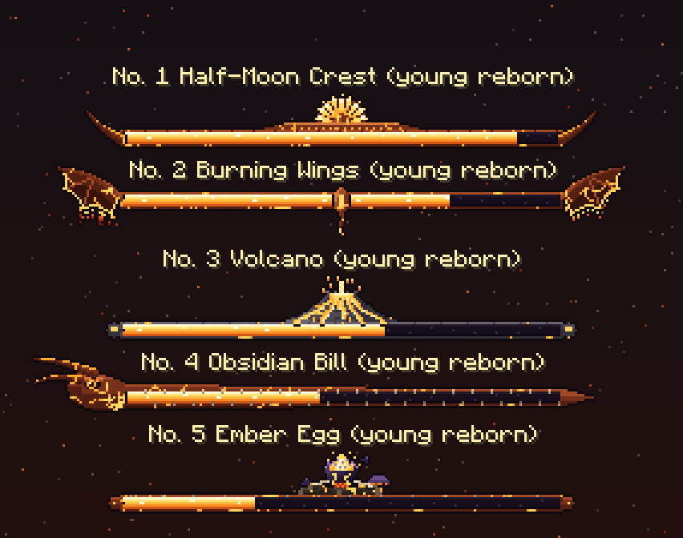
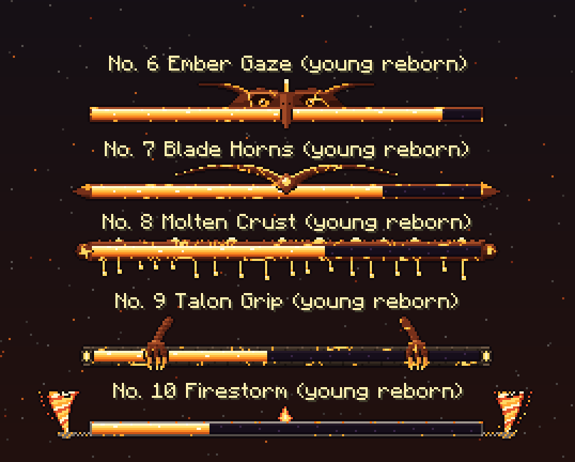

The Emberdactyl's boss bars: ten designs to pick from
Each design has two looks: the adult's, Emberdactyl: The Sky That Burns (obsidian, a lava-orange fill), and its young reborn's, Emberdactyl: The Ember That Remains (the same design, hotter: magma crust split by lava veins, a white-hot fill). Drawn 3x, exactly as the game draws them. In the game: /dross showcase bossbars emberdactyl (page 1), ... 2, ... 3, ... 4. The fight uses design 1 until you pick.
- Half-Moon Crest: Its half-moon crest standing on its obsidian bill in the middle of the bar: a fan of glowing plates between dark ribs, a hot rim, a tooth at each plate's tip; a blade horn sweeping up from each end.
- Burning Wings: Its wings spread out from the bar's ends, their membranes hanging under the arms to glowing scalloped edges, fire falling from them; its slender body seen from below in the middle, a tail hanging under the bar.
- Volcano: Its volcano on the middle of the bar: a steep basalt cone, a crater of lava, streams down its flanks; smoke blowing off it (adult), erupting in a fountain of lava bombs (young). Basalt rails with a lava pool at each end.
- Obsidian Bill: The bar is its open bill, lava glowing in its throat: its head in profile at the left end (its eye, the blade horns swept back), the upper bill and the jaw running along the bar to a sharp point at the right end, teeth along their edges.
- Ember Egg: Its egg on a nest of charred logs and bones in the middle of the bar: obsidian fading from black at its foot to violet at its top, lava glowing through its cracks (adult); hatched, its top broken away, the lava inside blazing up, shards of shell fallen on the nest (young).
- Ember Gaze: Its face over the middle of the bar, seen from the front: a heavy obsidian brow, its two eyes glaring out of dark sockets (the adult's ember slits, the young's round amber eyes), its bill pointing down across the bar, the half moon edge-on above its brow and the blade horns swept out to the sides.
- Blade Horns: Its two great blade horns swept out along the top of the bar from a lava gem in the middle, their edges glowing like a blade fresh from the forge; the rails end in blade points.
- Molten Crust: No ornament but the bar itself: thick, lumpy rails of crusted rock split by glowing cracks, lava pooled on top and dripping off the bottom (the young's crust hotter, its drips longer and more).
- Talon Grip: The bar is a charred branch, glowing at its cut ends, gripped by its two clawed feet coming down from above.
- Firestorm: The gust of its wings: a fire tornado whirling up from each end of an ashen bar, a flame burning in the middle.
All ten

Showcase page 1: designs 1-5, the adult

Showcase page 2: designs 6-10, the adult

Showcase page 3: designs 1-5, the young reborn

Showcase page 4: designs 6-10, the young reborn
